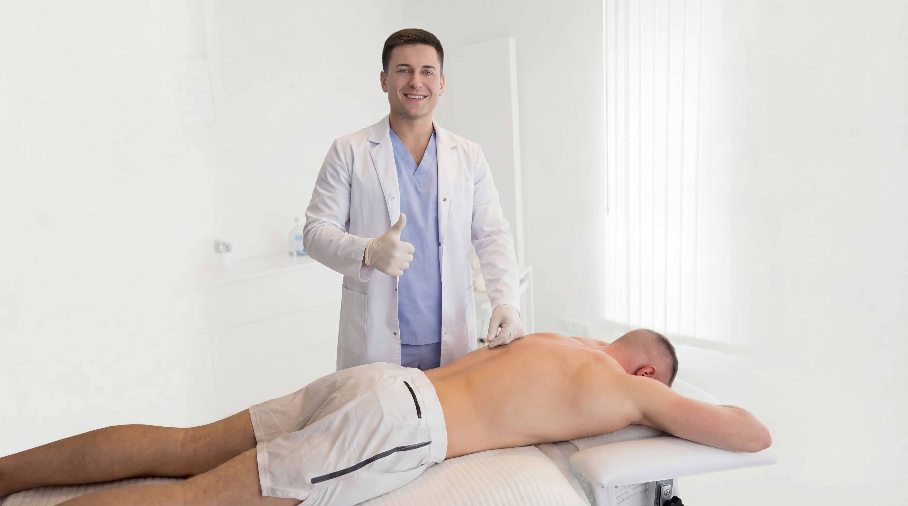
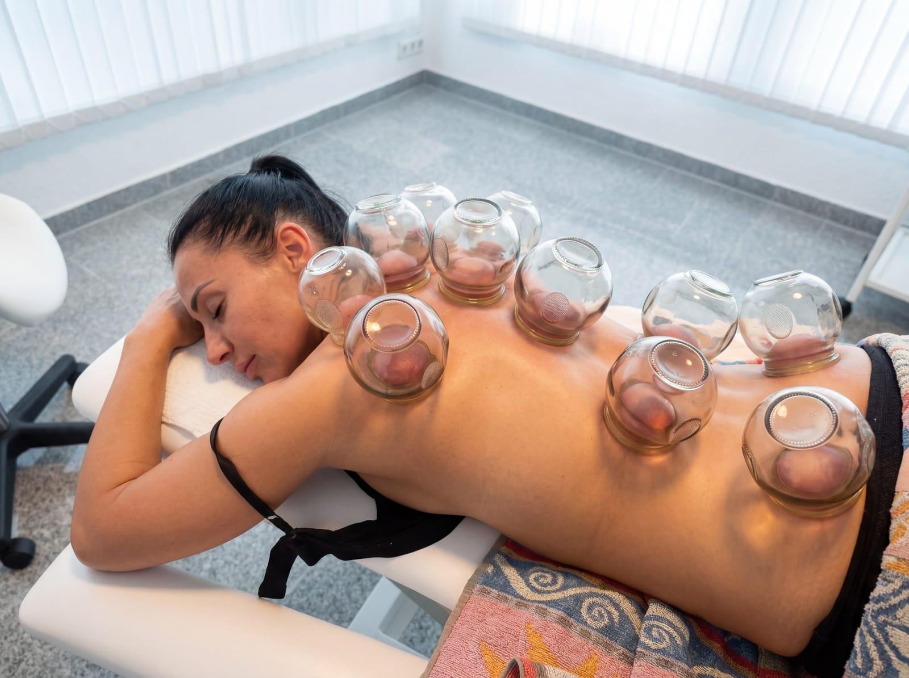

Schulter · Nacken · Rücken
30 Minuten gezielte Arbeit
80€
- Gezielte Triggerpunktarbeit
- Schmerzlinderung im Fokusbereich
- Beweglichkeitssteigerung
- Nachbetreuung & Tipps

Spaichingen · Faszien & Triggerpunktarbeit
Für Menschen mit anhaltenden Schmerzbelastungen und körperlichen Beschwerden.
Bei Druck, Ziehen, Stechen und verhärteten Strukturen im Gewebe.
Behandlungsbereiche
Wenn du dich in einem der folgenden Punkte erkennst, ist eine Behandlung für dich geeignet.
Chronische Rückenschmerzen, Nackenverspannungen, Zugspannung im Kopfbereich
Eingeschränkte Schulterbeweglichkeit, Taubheitsgefühle in Armen oder Händen
Waden- und Oberschenkelverhärtungen, Fußsohlenschmerzen, Gesäßblockaden
Schmerz, der nicht dort sitzt, wo die Ursache liegt — ein Zeichen für aktive Triggerpunkte
Kieferverspannungen, Druckgefühl im Kopf, Schwindel durch Muskelverspannung
Dauerhaft angespannt, blockiert, innerer Druck — auch ohne klare Schmerzursache
Wie ich arbeite
Jeder Körper erzählt eine Geschichte. Ich taste gezielt nach Verspannungen, Verhärtungen und Triggerpunkten — dort, wo der Schmerz wirklich entsteht, nicht wo er sich zeigt.
Mit präzisen manuellen Techniken arbeite ich an tiefsitzenden Gewebeverdichtungen. Das kann intensiv sein — und genau das ist der Unterschied zur klassischen Massage.
Nach einer kurzen Reaktionsphase (oft Muskelkater für 1–2 Tage) berichten die meisten Klienten von deutlich reduziertem Schmerz und besserer Beweglichkeit.

Über mich
„Mein Anspruch: dort arbeiten, wo viele Ansätze nicht weiterkommen. Präzise, ehrlich, mit Zeit für deinen Körper."
Ich bin Wadim Fech, selbstständiger Faszientherapeut & Sporttherapeut mit Schwerpunkt auf manueller Tiefengewebearbeit. Sie sind bei mir richtig, wenn Sie im Alltag anhaltenden Druck im Körper, Ziehen oder stechende Empfindungen von Kopf bis Fuß wahrnehmen – zum Beispiel im Nacken-, Schulter-, Rücken-, Arm- oder Beinbereich.
Viele Menschen spüren über längere Zeit Druck im Gewebe, harte Muskelstrukturen oder tief sitzende Verhärtungen, die sich im Laufe der Jahre im Körper aufbauen. Solche Strukturen entstehen häufig durch dauerhafte körperliche Belastung, einseitige Bewegungsmuster oder anhaltenden Druck im Bewegungsapparat.
Ausbildung & Zertifizierungen
Preise & Leistungen
Wähle die Behandlung, die zu deinen Bedürfnissen passt. Alle Preise inkl. Nachbetreuung und Tipps.
30 Minuten gezielte Arbeit
80€
Beliebteste Wahl
30–45 Min. · je nach Körperbau
100€
30 Minuten gezielte Arbeit
65€
Wichtiger Hinweis: Bei der ersten intensiven Anwendung kann es – besonders bei stark ausgeprägten oder länger bestehenden Muskelverhärtungen – zu Muskelkater, Druckempfindlichkeit, Hämatomen (blauen Flecken) oder vorübergehender Bewegungseinschränkung kommen. Diese Reaktionen sind individuell unterschiedlich und klingen in der Regel nach wenigen Tagen ab. Keine Entspannungs- oder Standardmassage. Es handelt sich um gezielte Tiefengewebsarbeit zur Lösung muskulärer Verhärtungen und zur Entlastung des Körpers.

Zusatzleistung
Durch den entstehenden Unterdruck wird das Gewebe intensiv aktiviert. Die Hautporen öffnen sich, die Durchblutung wird angeregt und das Areal besser mit Sauerstoff und Nährstoffen versorgt.
Spannungen können sich lösen und die Regeneration wird gezielt unterstützt — eine kraftvolle Ergänzung zur Tiefengewebsarbeit.
Als Zusatzleistung vor Ort buchbar — frag einfach beim Termin nach.
Echte Stimmen
Klassische Massage arbeitet an der Oberfläche. Meine Arbeit setzt im tieferen Muskel- und Fasziengewebe an – dort, wo sich über längere Zeit verhärtete Strukturen im Gewebe entwickeln. Präzise Gewebearbeit. Keine Entspannungsbehandlung.
Wir starten mit einem kurzen Gespräch zu deinen Beschwerden, Vorerkrankungen und Zielen. Anschließend taste ich gezielt nach den Bereichen mit Druck, Verhärtung oder Triggerpunkten. Die eigentliche Behandlung dauert je nach Option 30 bis 45 Minuten. Am Ende bekommst du Hinweise für die nächsten 24–48 Stunden und ggf. einfache Heimübungen.
Bei starken Gewebeverhärtungen kann die Behandlung intensiv sein. Der Druck wird kontrolliert angepasst — sag mir jederzeit, wenn es zu viel wird. Danach kann kurzfristig eine muskelkaterähnliche Reaktion auftreten, die meist nach 1–2 Tagen abklingt.
Das hängt von Alter, Beruf und Beschwerden ab. Jüngere Menschen: alle 2–4 Wochen. Bei chronischen oder berufsbedingten Beschwerden: alle 1–2 Wochen. Wir besprechen das individuell nach der ersten Behandlung.
Bei akuten Entzündungen, Fieber, Blutgerinnungsstörungen, frischen Operationen, Krebserkrankungen, Rheuma oder Arthrose ist von Tiefengewebsarbeit abzuraten. Bitte im Zweifel vorher ärztlich abklären.
Ja! Ich biete zertifizierte Online-Kurse für alle, die fachlich in Faszienpraktiken einsteigen möchten — ob zur Weiterbildung oder für den Schritt in die Selbstständigkeit. Mehr zum Online-Kurs →
Bereit für echte Veränderung?